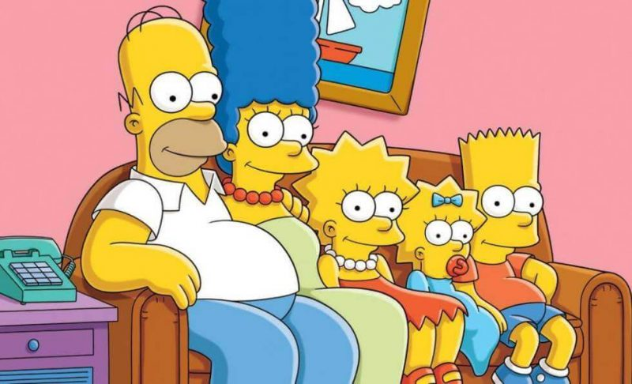
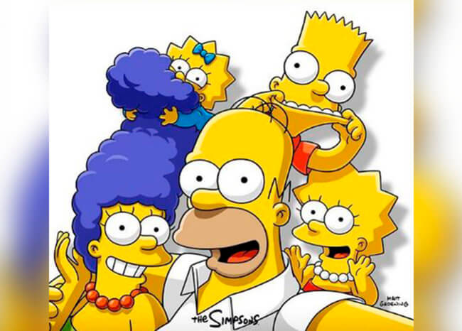
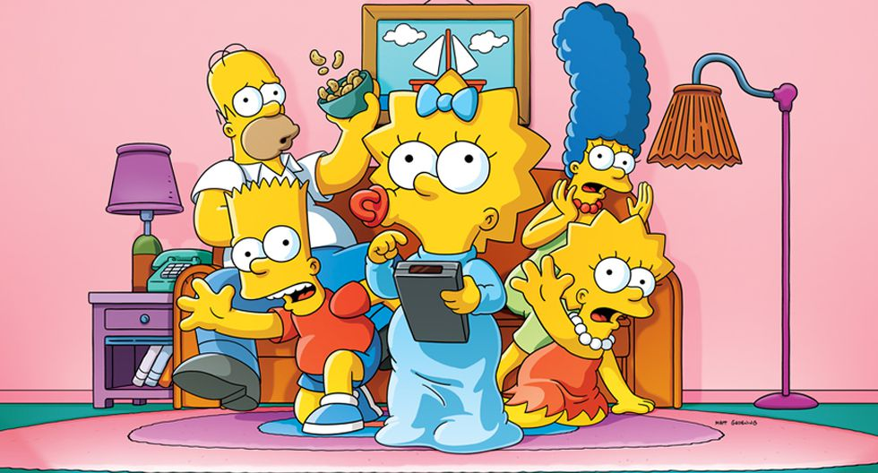

Conoce a la Familia Simpson

Los Simpson ha ganado numerosos premios desde su estreno como serie, incluyendo 33 premios Emmy, 32 premios Annie y un premio Peabody. La revista Time del 31 de diciembre de 1999 la calificó como la mejor serie del siglo XX, y el 14 de
enero de 2000 recibió una estrella en el Paseo de la Fama de Hollywood. Los Simpson es una de las series estadounidenses de dibujos animados de mayor duración9
Influencia en la Television

Los Simpson fue la primera serie de animación en emitirse con éxito en prime time desde Wait till Your Father Gets Home en los años 70 Durante la mayor parte de los 80, los expertos consideraban que estas series solo eran apropiadas para
niños y que la animación de una serie era demasiado cara como para alcanzar la calidad esperada en un programa perteneciente a la franja horaria de máxima audiencia. Los Simpson cambió esta idea.
Historia

James L. Brooks había hablado con Matt Groening sobre la creación de una serie de cortometrajes de animación, que Groening iba a basar en su cómic Life in Hell. Al darse cuenta de que convertir Life in Hell en una animación supondría la
rescisión de los derechos de publicación de la obra de su vida, escogió otro enfoque y creó su particular modelo de familia disfuncional,122 cuyos personajes eran homónimos respecto a los miembros de su propia familia excepto en
su propio caso, en que sustituyó Matt por Bart.Groening ideó a la familia Simpson en el vestíbulo de la oficina de Brooks